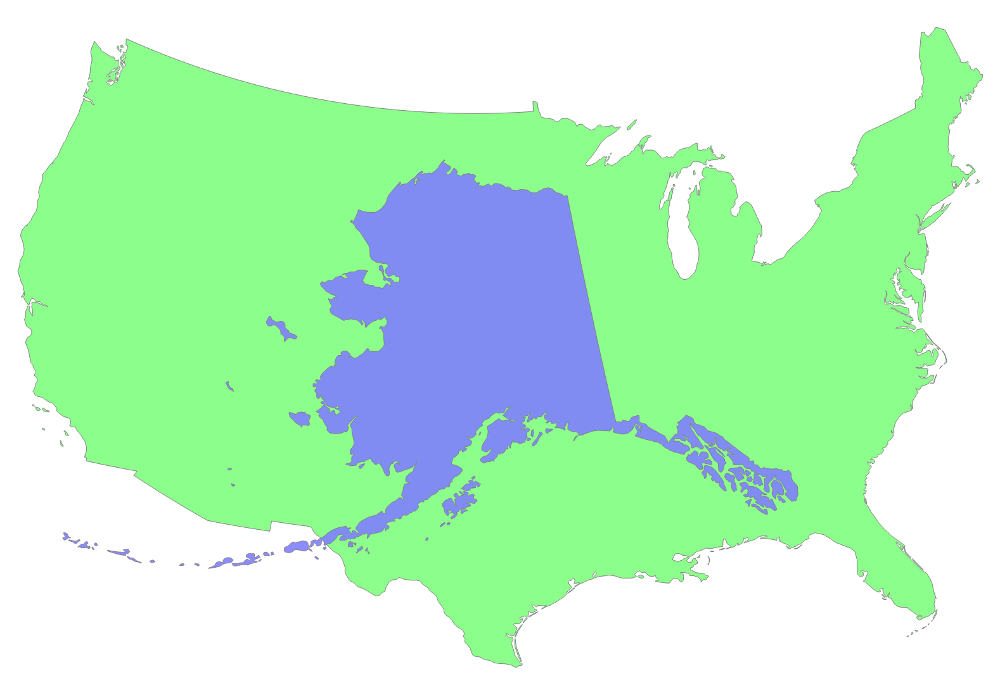
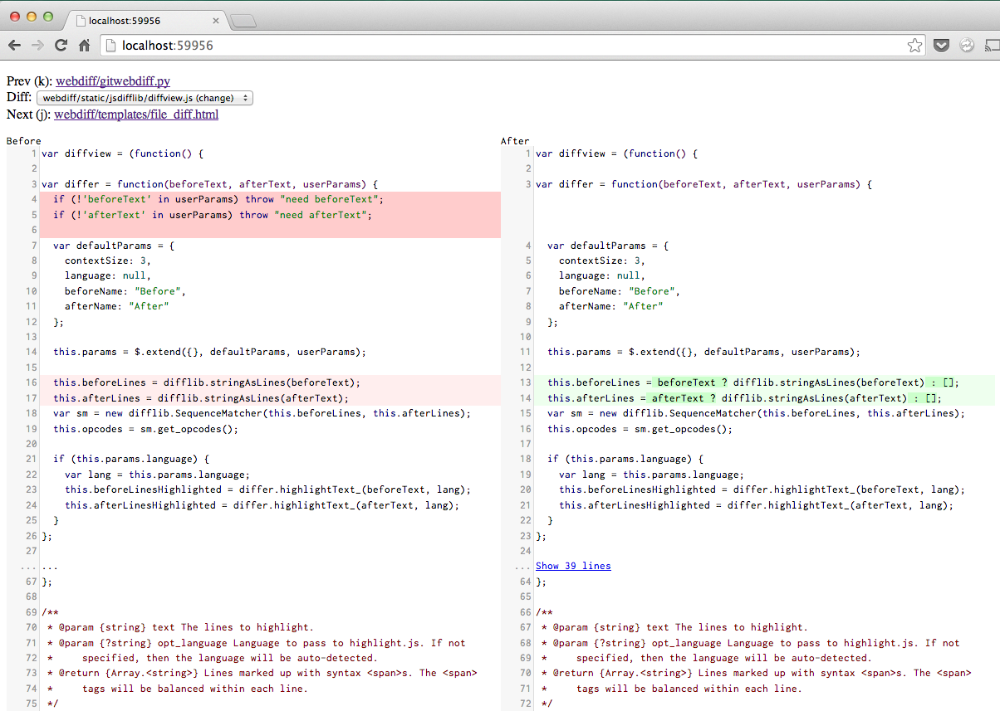
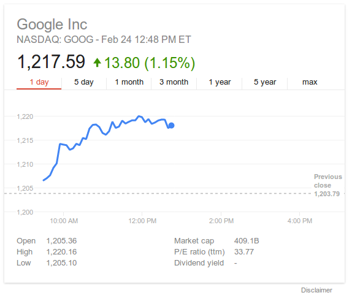
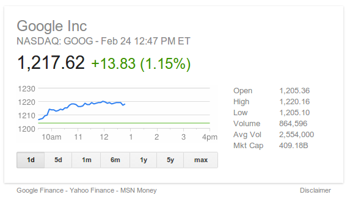
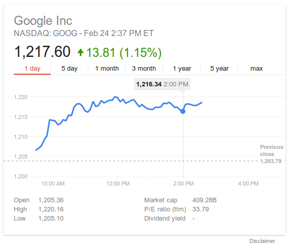
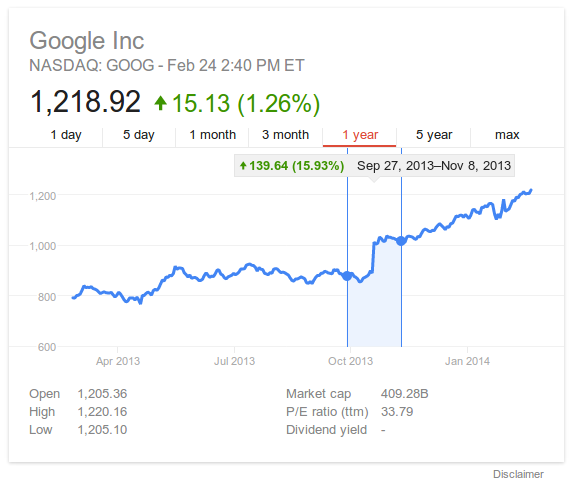

10.09.14
Posted in Uncategorized at 8:59 am by danvk
TL;DR: new site, new blog, new feed
After eight years of blogging with WordPress, it’s time to ditch this 11-year old technology in favor of the merely 6-year old GitHub pages.
Visiting danvk.org will take you to the new site, from which you can find the new danvk blog. For RSS subscribers, you can find the new feed here. Head on over and leave a comment!
As part of the move, I read through all eight years of blog posts. This was a real trip down memory lane for me. The blog started as something of a personal journal when I moved to California, but turned more tech-focused and sparse as I started to make more friends in my new home. I pulled out some highlights from the last eight years here.
Why do this? Blogging with WordPress feels heavy-weight and inflexible compared to using Markdown and my existing git workflows. And I’m very excited about the idea of not hosting my own site—danvk.org has always felt quite slow to load, but I’ve never quite been sure why.
Permalink
08.17.14
Posted in Uncategorized at 10:50 am by danvk
I’m interested in using OpenStreetMap data to add lots more shapes to Comparea. There are far too many polygons in OSM to include everything, so you have to filter to “interesting” ones. That’s a hard concept to make precise! One idea is to say that any feature with an associated Wikipedia article is interesting.
To make a list of such features, I started with the planet.osm file, which you can download as a Torrent. This file is in “PBF” format, an OSM-specific format based on Google’s Protocol Buffers. I tried to filter down to just the features with Wikipedia tags using GDAL’s ogr2ogr tool (which supports PBF format), but had no luck.
Instead, I wrote my own filter using C++. This was much easier than you might expect and, since the planet.osm.pbf file is 25GB and growing, probably worth the effort.
I used libosmpbfreader, which depends on libosmpbf, which in turn depends on protoc. On Mac OS X, this was what my install sequence looked like:
brew install protobuf
git clone https://github.com/scrosby/OSM-binary.git
cd OSM-binary
make -C src
make -C src install
cd ..
git clone https://github.com/CanalTP/libosmpbfreader.git
cd libosmpbfreader
make
./example_counter planet.osm.pbf
Running the example_counter binary over planet.osm.pbf, I was able to read something like 2GB/minute of data, so 12-13 minutes for the full file. The wikipedia filtering code ran in ~30 minutes. Here's my full code if you're interested. There were 117,211 ways with Wikipedia tags and 156,064 relations.
Permalink
08.13.14
Posted in Uncategorized at 11:33 am by danvk
Comparea is a tool that lets you Comparea Areas. It lets you answer questions like “how big is Greenland, really?” or “how large would Alaska be if it were in the contiguous US?”

Comparea projects the two geographic features using equal area projections with the same scale but different centers. This results in a valid comparison of their areas with minimal distortion for each shape. You can read more on Comparea’s about page or study this nifty diagram:

It works great on both desktop and touch devices, where you can drag the two shapes with your fingers or pinch to zoom.
Like most of my side projects, this one was developed on and off over a long period of time. I first worked on the project in spring 2012, discovered Natural Earth Data and quickly made a purely client-side demo. The response was generally positive, but I didn’t release it because of general UI jankiness (the transitions never quite worked), the lack of a backend and the feeling that I didn’t have enough polygons to make it fun.
About a year later (in early 2013) I started playing with Open Street Maps data. There are tons of great polygons in their data dumps, including smaller features like Golden Gate Park or Central Park. I spent a few weeks playing around with this data set, but ultimately could’t come up with a good way of deciding which shapes were notable enough to include (there are millions, and not every one block park is notable enough for inclusion).
I’d shown the Comparea demo to enough people that I was convinced it was worth publishing. (One notable demo session was with my six year old nephew, who rattled off country comparisons to me for nearly an hour!) When I got some time off between jobs, I decided to make releasing Comparea an explicit goal.
In addition to the finished product, the real value of any side project is what you learn from doing it. Here were some highlights:
- Flask This was my third Flask project (after gitcritic and webdiff) and I finally knew enough to organize it correctly.
- The whole hosting stack was new to me. This was my first Heroku project and my first time using CloudFlare for distribution. I’m a big fan of both. Developing using Flask and Heroku is far more lightweight and flexible than using AppEngine, which was my tool of choice in the past.
- I rewrote the UI using D3. Its projection and behavior tools were godsends. These both made lots of gross SVG manipulation code from my initial demo melt away.
- I debugged Natural Earth Data shapes using IPython Notebooks. Nothing beats a visualization for spotting outlying islands, which could dramatically affect a feature’s bounding box.
One of the main bits of feedback I got on the initial Comparea demo was that it would be helpful to show the area of each feature somewhere in the UI, so that you could compare numerically in addition to visually. I expanded this request to include populations and descriptions for each place as well. Sourcing and verifying all this data wound up being one of the most challenging pieces of the project. For example: no one can quite agree on what’s Morocco and what’s Western Sahara. The areas and populations you compute will vary depending on where you draw the line, but sources don’t always say what their line is! To make sure I wasn’t doing anything too unreasonable, I calculated the areas of my polygons and then compared this value to the stated area from an official source. I iterated until they were all within about 10% of one another.
What’s next? I’d like to add more fine-grained shapes to allow comparisons like San Francisco vs. NYC or Golden Gate Park vs. Central Park. And I’d like to add a mode where you can move one shape around a complete map of another area. This would be helpful for comparing San Francisco to the entire NYC area, for example.
But for now, I’m happy to finally get this project launched. Enjoy!
Permalink
07.03.14
Posted in Uncategorized at 10:01 am by danvk
After leaving Google and working in the open source ecosystem for the past few months, it’s become increasingly clear to me which pieces of Google’s infrastructure are ahead of the curve and which are not. One piece that’s clearly ahead is Google’s code review tool.
Google’s original code review tool was Guido van Rossum’s Mondrian, which he eventually open sourced as Rietveld, a project which was in turn forked into Gerrit. Mondrian has since been replaced by a newer system at Google but, to my knowledge, this new system has never been publicly discussed.
These code review tools all excel at showing side-by-side diffs. The difference between inline and side-by-side (two column) diffs is so dramatic that I refuse to waste mental energy trying to grok the inline diffs that github insists on showing.
There are a few ways to get two column diffs out of git (“git difftool”), but they all have their problems:
- Many diff tools (e.g. tkdiff) are XWindows programs are clearly out of place in Mac OS X. They often don’t work well with the app switcher and or show high resolution (“retina”) type.
- Most diff tools want to operate on pairs of files. tkdiff and p4merge show you one file at a time in isolation. Once you advance past a file, you can’t go back. I like to flip back and forth through files when viewing diffs.
- They typically do not support syntax highlighting.
There are certainly diff tools for Mac OS X that do all these things well, but they tend to be commercial.
Enter “git webdiff“, my newly-released side project which aims to improve this situation.
Any time you’d run “git diff”, you can run “git webdiff” instead to get a nice, two-column diff in your browser, complete with syntax highlighting. Here’s what it looks like:

When you run “git webdiff”, your browser will pop open a tab with this UI. When you’re done, you close the tab and the diff command will terminate. It works quite well any time you have an even remotely complex diff or merge to work through.
You can install it with:
pip install webdiff
Please give it a try and let me know what you think!
Permalink
06.14.14
Posted in Uncategorized at 2:59 pm by danvk
The last project I worked on at Google recently launched: a new and improved Finance Onebox.
You trigger the feature by searching for a stock ticker, e.g. AAPL, GOOG or .INX:

For comparison, here’s what it used to look like:

The main new features are:
- A larger chart
- A cleaner, more modern design
- More relevant attributes (P/E ratio, Dividend Yield)
- After-hours trading on the stock chart
- Interactivity
The interactivity comes in a few forms. First, you can click the tabs on the top to zoom out to 5 day, 1 month, 3 month, 1 year, 5 year or Max views.
Next, you can mouse over the chart to see the price at any point. On touch devices, tap/swipe with one finger:

But wait, there’s more! What if you see a change on the chart and want to know how large it was? You can click and drag across that time range to see a delta. On touch devices, you trigger this by putting two fingers on the chart:

This is particularly useful for longer-range charts, where it lets you easily answer questions like “how much did the S&P 500 drop from 2008–2009?”
Permalink
« Previous entries
Next Page »